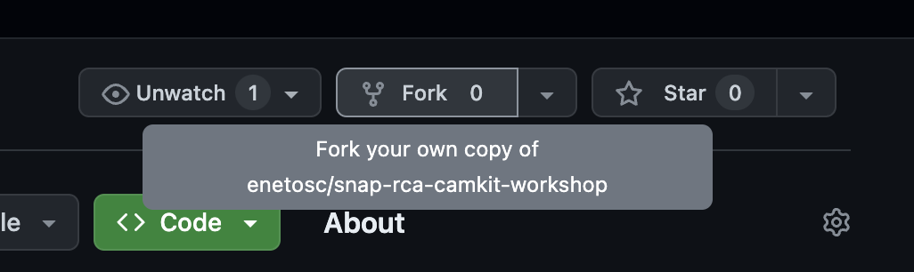

## Camera Kit Workshop Snap x Royal College of Art --- ## Who am I? #### Edgar Neto - Partner Engineer (AR), Snap - Previously Meta, multiple gaming startups - MSc Computer Science 2011 - MSc Psychology and Neuroscience (est. 2025) --- ## Agenda for today - Introduction to Lens Studio - Lab: Building your first Lens - Introduction to Camera Kit - Lab: Publishing a Lens to a Web Application - Optional: Publishing a Lens to a Mobile Application --- ## Step 1 - Go on Github.com - Fork this repository to your account: https://shorturl.at/ijGL0  --- ## Step 2 - Once done, clone the newly forked repository to your computer, and run this on terminal: ``` > cd path/to/local/folder > npm install > npm start ```